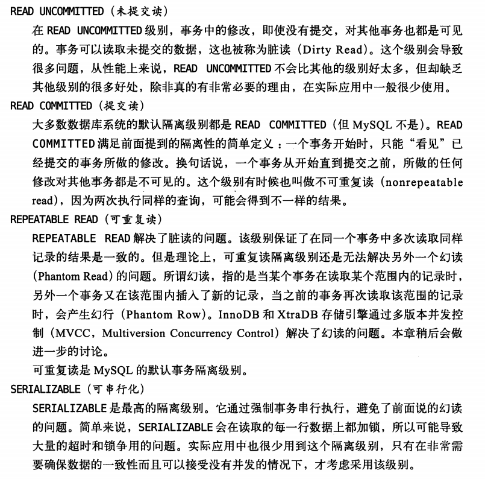

事务隔离级别
mysql 有四级事务隔离级别:

(图来自: <高性能mysql一书>)
解释:
- 脏读: 在事务T1中可以读取到事务T2中还没提交的更新;
- 不可重复读: 事务T1能够读取到事务T2提交后的更新, 这将导致事务T1在T2提交前后读取到的数据不一样, 即不可重复读;
- 幻读: 幻读，并不是指在同一事务中执行两次同样的sql语句获取到的结果集不同，幻读侧重的方面是某一次的 select 操作得到的结果所表征的数据状态无法支撑后续的业务操作。更为具体一些：select 某记录是否存在，不存在，准备插入此记录，但执行 insert 时发现此记录已存在，无法插入，此时就发生了幻读。
幻读举例:
1.幻读的产生:
下面用REPEATABLE-READ隔离级别举例说明
查看看事务隔离级别和测试表(innodb存储引擎的表)结构:
1 | mysql> select @@global.tx_isolation, @@tx_isolation; |
(1). 事务T1中
1 | mysql> begin; |
(2). 事务T2:
1 | mysql> begin; |
(3). 回到事务T1中:
1 | mysql> select * from test where id =1; |
我们可以看到在T2事务的中途干扰下, 导致T1事务出现了幻读 : 在事务T1中查询 id=1的数据不存在, 但指定id为1插入数据时又会抛出错误 Duplicate entry ‘1’ for key ‘PRIMARY’ , 然后我们在出现插入错误提示后, 在T1中查询id=1的数据还是不存在。
2.SERIALIZABLE防止幻读的方式
因为在该隔离级别下, 会给读取到的每一条数据强制加锁 (数据行存在加 X锁, 不存在的加Gap Lock锁 ), 即记录存在与否，mysql 都会对记录应该对应的索引加锁，其他事务是无法再获得做操作的。
MySQL InnoDB支持三种行锁定方式：
- 行锁（Record Lock）:锁直接加在索引记录上面，锁住的是key。
- 间隙锁（Gap Lock）:锁定索引记录间隙，确保索引记录的间隙不变。间隙锁是针对事务隔离级别为可重复读或以上级别而已的。
- Next-Key Lock ：行锁和间隙锁组合起来就叫Next-Key Lock。